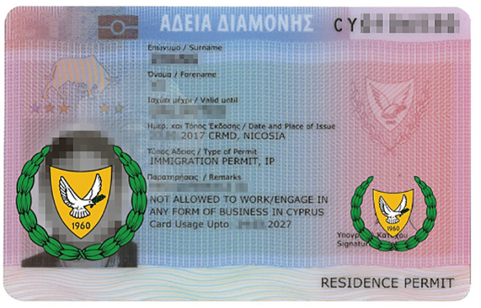
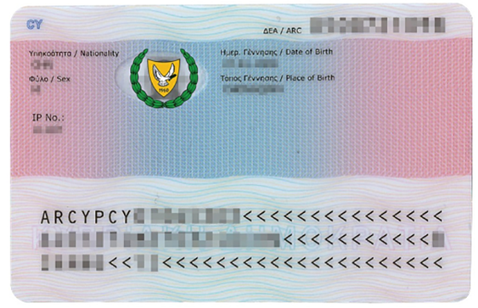
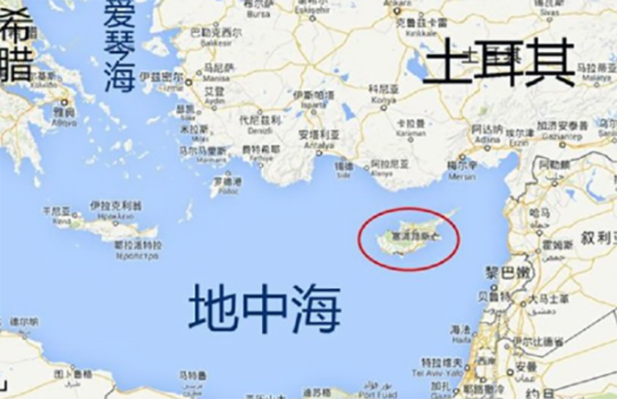
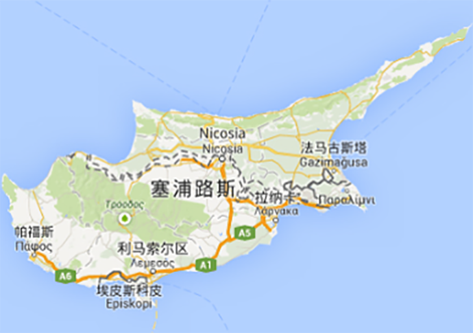

项目优势：
投资额少：只需30万欧元购房
永居身份：一步到位获得永久居留身份
申请快捷：递交申请后最快2个月可获批
门槛较低：无经商背景、学历和语言要求
安全性高：现房交易，房产可出租
三代移民：一人申请，三代移民
无移民监：仅需每5年登陆1次
英联邦国：享受当地英联邦体制的教育，以及先进的医疗福利
政策解读：
2012年8月22日，塞浦路斯政府颁布投资移民政策，允许非欧盟国家公民通过在塞浦路斯购置30万欧元及以上房地产的方式，即可获得塞浦路斯永久居留许可。

申请条件：
在塞浦路斯投资价值30万欧元及以上的房地产
主申请人年满18周岁；附属申请人包括：配偶；未成年子女或18~25周岁未婚、在读且经济不独立的子女；经济依附于主申请人及配偶的父母
提供无犯罪证明
购买医疗保险
主申请人在塞浦路斯银行个人帐户内存入家庭生活保障金
主申请人提供3万欧元/年的收入证明；增加附属申请：子女5000欧/人、父母8000欧/人
办理流程：
方案评估，签约受理
办理签证，入境考察
购房信息确认，支付定金
签署律师授权协议，银行开户
支付购房余款，注册房产地契
准备材料，递交申请
居留许可获批
登陆领取居留卡
签证样本：


国家概述：
塞浦路斯地处地中海东部， 是欧亚非三大洲的交汇处，地理位置优越。主要城市有尼科西亚、利马索尔、拉纳卡和帕福斯等。 塞浦路斯是欧盟成员国和英联邦国家。旅游、船运、金融服务业是三大重要的支持产业，每年接待200多万名游客，其中绝大多数来自欧洲国家，近一半来自英国。塞浦路斯还被世界银行定位为高收入经济体系。
 